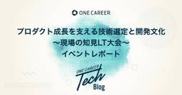
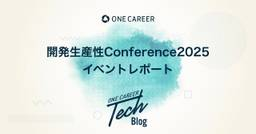

ONE CAREER Tech Blog
https://note.com/dev_onecareer
ワンキャリアのエンジニアによる技術者向けのブログです。普段の開発内容や、組織づくりなどを発信していきます。 一緒に働ける方を絶賛募集しています。 https://hrmos.co/pages/onecareer/jobs/2033176027264589830
フィード

「プロダクト成長を支える技術選定と開発文化 〜現場の知見LT大会〜」レポート
ONE CAREER Tech Blog
はじめにみなさん、こんにちは。DevHRチームの長谷川(X：@hasehathy)です。普段はエンジニア組織のXアカウント(@OnecareerDevjp)の運用や、このテックブログの運営、EntranceBookの作成〜更新などを担当しています。続きをみる
1日前

開発生産性Conference2025 イベントレポート｜ワンキャリア
ONE CAREER Tech Blog
みなさん、こんにちは。DevHRチームの長谷川(X：@hasehathy)です。普段はエンジニア組織のXアカウント(@OnecareerDevjp)の運用や、このテックブログの運営、EntranceBookの作成〜更新などを担当しています。2025年7月3日〜4日に開催された 開発生産性Conference2025 に、ワンキャリアとして初めて出展・登壇しました！続きをみる
2日前
裁量ある環境で、信頼されるインフラをつくる
ONE CAREER Tech Blog
こんにちは。ワンキャリアのDevHRチームの長谷川（X：@hasehathy）です。今回は、2025年4月に新卒として入社し、インフラ領域を中心にSRE業務に取り組むWei Xin（ギ シン）さんにお話を伺いました。「技術を使って誰かの役に立てる仕事」ができたらいいなと、自然とエンジニアを目指すようになったというWeiさん。現在はSREとして、社内サービスの信頼性向上に貢献しています。選考で感じた「人のよさ」や、入社後に実感した「裁量ある環境」、そして今後SREとして目指すキャリアについても語ってくれました。ぜひご覧ください！【Wei さん プロフィール】中国出身。高校では合唱部に所属し、大学では生徒会に入り宣伝部長を務める。大学院進学時に来日し、早稲田大学大学院 基幹理工学研究科に進む。趣味は、猫・撮影・旅行・スイーツ作り・ピアノ続きをみる
3日前

検索エンジンの“中身”に興味を持った。知的好奇心が導いたエンジニアの道
ONE CAREER Tech Blog
みなさん、こんにちは。DevHRチームの長谷川(X：@hasehathy)です。今回は、2025年4月に新卒入社したAI・データソリューション室の姚（ヨウ）さんにお話を伺いました！高校時代にAIやソフトウェアの仕組みに興味を抱き、大学進学を機に来日。現在はワンキャリアで、データの力でマーケティング部門領域の課題を解決する業務に取り組んでいます。この記事では、彼のこれまでの歩みや、ワンキャリアに入社を決めた理由、そして今後目指していくエンジニア像について深くお届けします。ぜひご覧ください！【姚さんプロフィール】 中国出身。早稲田大学基幹理工学部情報理工学科を卒業し、同大学大学院に進学。2025年4月にワンキャリアへ新卒入社。 現在はAI・データソリューション室に所属し、マーケティング部門やコンサルティング部門と連携しながら、 事業課題の解決に貢献するためのデータ活用を支援している。趣味は、音楽鑑賞とCD収集。続きをみる
24日前
フラットな関係性と、自走できる環境。使われ続けるプロダクトをつくる
ONE CAREER Tech Blog
みなさん、こんにちは。DevHRチームの長谷川(X：@hasehathy)です。今回は、2025年4月に新卒として入社したAI Opsチームの越川さんにお話を伺いました！サッカーやボルダリングなど運動に親しんだ学生時代を経て、大学では情報学を専攻し、現在はワンキャリアでAIによる社内業務の効率化に取り組んでいる越川さん。エンジニアを目指すに至ったきっかけや、就職活動で感じたワンキャリアの魅力、そして今後のキャリアに対する思いなどを語ってくれました。それでは、ぜひ最後までご覧ください！【越川さんプロフィール】 千葉県出身。高校ではボルダリング部に所属し、大学では東京電機大学・大学院に進学。 大学時代は、汎用人工知能(AGI)に興味を持ちに情報学を専攻。 2025年4月に新卒として入社し、現在はAI・データソリューション室に所属し、AIによる社内業務の効率化に従事している。 趣味は、アニメ・ボルダリング・散歩・ベース続きをみる
24日前
「宇宙兄弟」がきっかけで理転。データで価値を創出するエンジニアに
ONE CAREER Tech Blog
みなさん、こんにちは。DevHRチームの長谷川(X：@hasehathy)です。今回は、今年4月に新卒入社したデータエンジニアリングチーム所属の塚田さんにインタビューしました！会津大学から中央大学大学院へと進み、データサイエンスを専門的に学んできた塚田さん。現在はデータチームで、データ基盤の構築・改善に関わる重要な役割を担っています。そんな塚田さんに、学生時代の話やエンジニアを目指そうと思ったきっかけ、ワンキャリアに入社した決め手を聞いてみましたのでぜひご覧ください！【塚田さんプロフィール】 神奈川県出身。会津大学コンピュータ理工学部を卒業後、中央大学理工学研究科ビジネスデータサイエンス専攻に進学。 2023年1月にワンキャリアにインターン生としてジョイン、2025年4月にワンキャリアに新卒入社。 現在はデータチームのエンジニアとして、データ基盤の構築・改善に関するプロジェクトを担当している。中学ではサッカー部でレギュラーとして活躍し、高校ではフットサルチームを立ち上げて神奈川県リーグに出場した経験を持つ。続きをみる
24日前
【ONE CAREER エンジニアのホンネ vol.11】“1PR1リリース”による成長とは？多様なチャレンジの3ヶ月間
ONE CAREER Tech Blog
みなさんこんにちは！ワンキャリアにて、共通基盤チームの菅野(GitHub: sugasho）です。今回は私がワンキャリアに入社してから3か月の間に取り組んだことについて振り返っていきたいと思います。続きをみる
1ヶ月前
Going Further with Git─ Gitの基礎から一歩深掘り
ONE CAREER Tech Blog
こんにちは！ワンキャリアの新卒向け就活サイト「ONE CAREER」のモバイルアプリチームでマネージャーをしている Alix（BlueSky：@alixfachin.bsky.social）です。私は数年前から、ほぼ毎日のように git を使っています。ただ知識の理解を深めるには、時々振り返って読み直すことが大切だと感じています。面白い推理小説を何度も読むのと一緒で、その度に新たな発見があるからです、（ちなみに『Usual Suspects』は何度も観直しましたが、いまだにすべてを把握できていません…笑）続きをみる
1ヶ月前
即戦力エンジニアへ。ワンキャリア初の新卒エンジニア研修の全貌
ONE CAREER Tech Blog
みなさんこんにちは！DevHRチームの長谷川(X：@hasehathy)です。ワンキャリアでは2025年卒から、初めてエンジニア新卒社員向けの研修プログラムを実施しました。本記事では、その狙いや設計思想、実際の研修内容について詳しくご紹介します。「エンジニアとしてワンキャリアに興味があるけど、実際入社後どう成長できるのか？」「新卒で入ったあとに、ちゃんとキャッチアップできる環境はあるのか？」そんな疑問にお応えできる内容になっています。ぜひ参考にしていただけると嬉しいです。続きをみる
1ヶ月前
ワンキャリア新卒エンジニアの1年目レポート vol.2
ONE CAREER Tech Blog
みなさんこんにちは！ワンキャリアの西川(X ：@takashi54461358)です！ワンキャリアに入社してから約1年が経ちました。続きをみる
2ヶ月前
Androidだけテキストが改行される？─ 同じコードなのに見た目がズレる、React Native UI崩れの裏側
ONE CAREER Tech Blog
みなさん、はじめまして。ワンキャリアのフロントエンドエンジニアの金 (Gituhub：@chihiroanihr) です。私は2025年1月に中途でワンキャリアにジョインし、アプリチームの一員として、React Nativeを使った就活サイト『ONE CAREER』モバイルアプリの開発に携わっています。早速ですが、今回は私がモバイルアプリ開発中に遭遇した不思議な現象について、その正体を追い求めて三千里した記録を皆さんと共有したいと思います。続きをみる
2ヶ月前
開発しやすくするために、処理や関心ごとを分けた話
ONE CAREER Tech Blog
みなさんこんにちは。中途向けメディア・転職サイト 「ONE CAREER PLUS」開発チームの西川(X ：@takashi54461358)です！フロントエンド開発において、UIの構築や状態管理など様々な実装を進める中で、「もっと早く、もっと正確にアウトプットを出したい」と考える瞬間が何度もあるのではないでしょうか？私自身も、日々の開発の現場でそうした悩みに直面することがよくあります。そんな中で試行錯誤を重ねるうちに、処理の分離やデータ構造の一元管理といった工夫が、結果的に開発速度と保守性を大きく高めてくれることに気づきました。このブログでは、私が実際のプロジェクトで遭遇したコードの2例を挙げて続きをみる
2ヶ月前
アルゴリズム検証のためのComparatorとデータ生成手法
ONE CAREER Tech Blog
みなさんこんにちは！ワンキャリアのOCC（ONE CAREER CLOUD）チームで開発エンジニアを担当しているJustin（Github：justin3-1）です。今回はアルゴリズム検証に欠かせない「Algorithm Comparator」について、実際にコードを書いて動かしながら、使い方や検証用のデータの作り方を学んだので、その内容を整理してみました。アルゴリズム比較や、パフォーマンス検証に興味のある方の参考になれば嬉しいです。続きをみる
2ヶ月前
RubyKaigi 2025 に参加してきました！
ONE CAREER Tech Blog
みなさんこんにちは！ワンキャリアでエンジニアリングマネージャーをしています、宇田川(X：@Ryoheiengineer)です！今回は先日参加したRubyKaigi 2025について、参加レポートをお届けしたいと思います。 初めてのRubyKaigi参加だったのですが、3日間の濃密な体験から得られた学びや気づきをお話したいと思います。この記事では、会場の様子、特に印象に残ったセッション、そして参加して感じたことなどを共有いたします。 RubyKaigi 2025に興味がある方はぜひ参考にしていただけると嬉しいです。続きをみる
2ヶ月前
知識の習得や学習機会を失わないための生成AIの使い方とは？
ONE CAREER Tech Blog
みなさんこんにちは！プロダクト開発部で部長をしています、山口（X: @yamat47）です。今回は「知識の習得や学習機会を失わないための生成AIの使い方」について、私の解釈をお伝えしていきます。続きをみる
2ヶ月前
Ruby 3.1.4から3.2.7へ〜ONE CAREER の Ruby をアップグレードした体験記〜
ONE CAREER Tech Blog
みなさんこんにちは！ワンキャリアでエンジニアをしている村松（GitHub：nachan28）です。今回は、ONE CAREERのRubyバージョンを3.1.4から3.2.7にアップグレードした体験について書いていきます。バージョンアップは、一見シンプルな作業に思えますが、実際には様々な課題が待ち受けていました。この記事が、同じような作業を検討している方の参考になれば幸いです！続きをみる
2ヶ月前
エンジニアとしての可能性を広げた1年〜ワンキャリアでの技術的挑戦と成長〜
ONE CAREER Tech Blog
みなさんこんにちは！ワンキャリアで共通基盤チームのリーダーを務めている鶴瀬(Github：@tsuru-kazu）です。この 1 年間、共通基盤チームのリーダーとして、ONE CAREER for Engineer の求人機能開発や視聴ログ基盤の構築など、複数のプロダクトを横断する大規模なプロジェクトに携わってきました。これらの経験を通じて、技術的なスキルだけでなく、プロジェクトマネジメントやチームリーダーシップなど、エンジニアとしての幅広い成長を実感しています。本記事では、この 1 年間で経験したプロジェクトや技術的な挑戦、そしてそれを通じて得られた学びについて振り返りたいと思います。続きをみる
2ヶ月前
【ONE CAREERエンジニアのホンネ vol.10】小さなPR、大きな気づき。検索画面と向き合った3ヶ月
ONE CAREER Tech Blog
みなさんこんにちは！ワンキャリアでモバイルアプリ開発を担当している 金 りな (Github：@chihiroanihr) です。入社して３ヶ月が経ったので、これまでの挑戦や学びをざっくり振り返ってみたいと思います！続きをみる
2ヶ月前
ワンキャリア新卒エンジニアの1年目レポートvol.1
ONE CAREER Tech Blog
はじめにみなさん、こんにちは！ワンキャリアの ONE CAREER CLOUD 採用管理（ATS）チームにて、ソフトウェアエンジニアをしている杉水（X：@ltoppyl）です。続きをみる
2ヶ月前
さまざまな改善活動をしたらd/d/dが2倍以上になっていた
ONE CAREER Tech Blog
みなさんこんにちは！ワンキャリアでONE CAREER CLOUDの開発を担当している佐藤（Github ：@seiya2130）です。今回は日々の開発プロセスを改善していたら、個人のd/d/dが2倍以上になっていた話をご紹介します！続きをみる
2ヶ月前
第3回「生成 AI Innovation Awards」ファイナリストに選出！ワンキャリアのAIエージェント活用事例
ONE CAREER Tech Blog
みなさん、こんにちは。DevHRチームの長谷川(X：@hasehathy)です。普段はエンジニア組織のXアカウント(@OnecareerDevjp)の運用や、このテックブログの運営、EntranceBookの作成〜更新などを担当しています。今回は、Google Cloud主催の「第3回 生成 AI Innovation Awards」にワンキャリアがファイナリストとして選出され、「AI Agent Summit '25 Spring」でピッチを行った様子をお届けします！続きをみる
3ヶ月前
【ONE CAREERエンジニアのホンネ vol.9】2人体制 からチーム開発へ 環境の変化による成長実感
ONE CAREER Tech Blog
みなさんこんにちは！ワンキャリアで就活サイト「ONE CAREER」のバックエンド開発を担当しています宮下(X：kosukein38)です。入社して３ヶ月が経ちましたので、振り返りを行いたいと思います！続きをみる
3ヶ月前
プロダクト開発部 部長就任のお知らせ
ONE CAREER Tech Blog
DevHRチームからのお知らせです。 ワンキャリアは、2025年5月1日、プロダクト開発部の部長として、シニアエンジニアリングマネージャーの山口拓弥が就任したことをお知らせいたします。プロダクト開発部 部長就任の背景続きをみる
3ヶ月前
GPT‑4.5とClaude Sonnet 3.7を徹底比較！最新LLMが切り拓く未来
ONE CAREER Tech Blog
みなさんこんにちは！ワンキャリアのデータサイエンティスト兼マーケターの長谷川です。（GitHub：@tyuyoshi）今回は、OpenAIのGPT-4.5とAnthropicのClaude 3.7 Sonnetについて、実際の使用体験をもとに比較していきたいと思います。どちらも2025年前半におけるAI最先端モデルとして注目を集めていますが、それぞれに特徴があり、用途によって使い分けると効果的です。今回は処理速度、ファイル処理能力、そして画像理解力の3つの側面から、実践的に検証してみました！続きをみる
3ヶ月前
SREの成長を支える技術書ガイド〜2軸で整理する14選〜
ONE CAREER Tech Blog
みなさん、こんにちは。DevHRチームの長谷川(X：@hasehathy)です。普段はエンジニア組織のXアカウント(@OnecareerDevjp)の運用や、このテックブログの運営、EntranceBookの作成〜更新などを担当しています。今回は、SREとしてのスキルアップに役立つ技術書をご紹介します！続きをみる
3ヶ月前